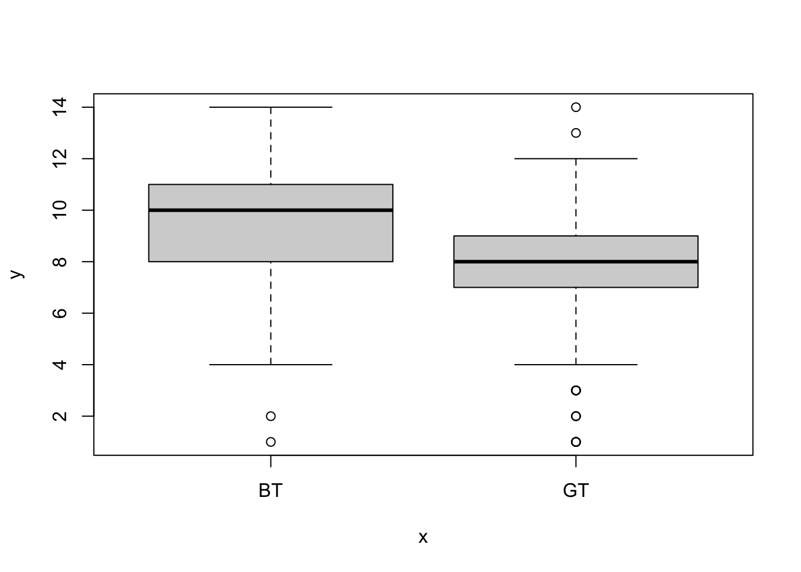
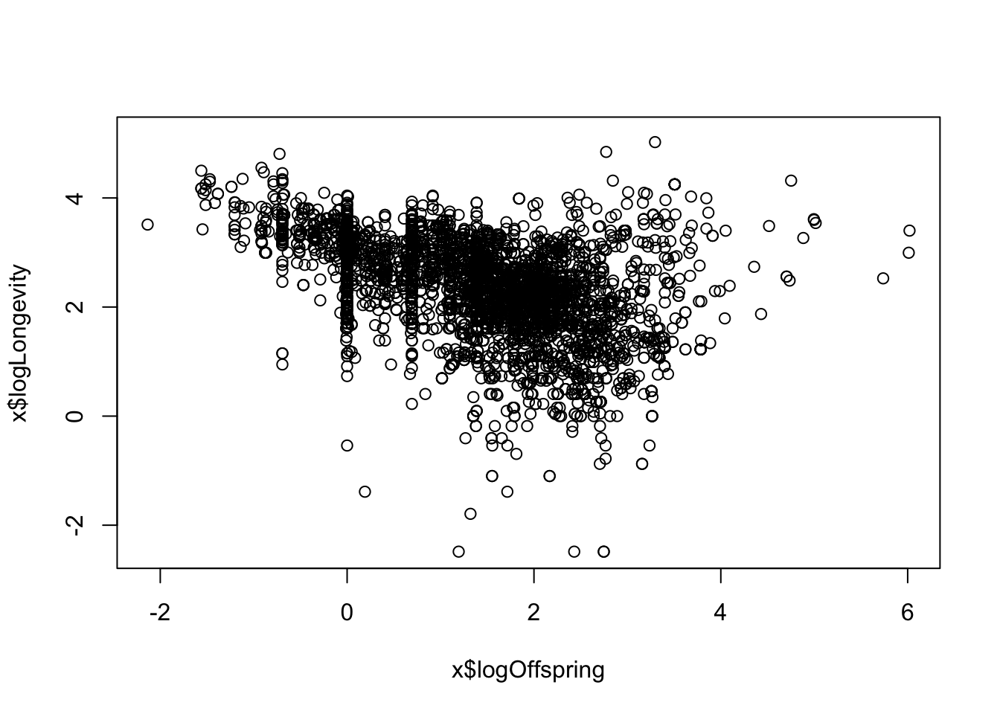
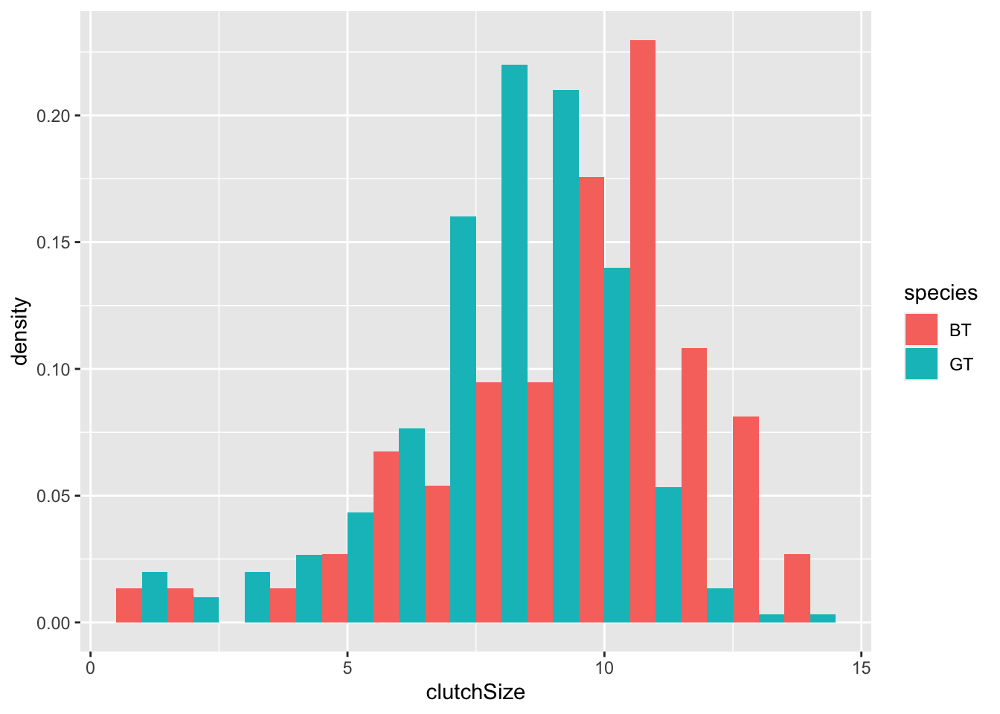

Chapter 5 Exercise: Wrangling the Amniote Life History Database
In this exercise the aim is to use the “Amniote Life History Database”4 to investigate some questions about life history evolution.
The questions are: (1) what are the records and typical life spans in different taxonomic classes? [what is the longest, shortest and median life span in birds, mammals and reptiles?] (2) is there a positive relationship between body mass and life span? [do big species live longer than small ones?]; (3) is there a trade-off between reproductive effort and life span? [do species that reproduce a lot have short lives, so there is a negative relationship between reproduction and life span?]; (4) is this trade-off universal across all Classes? [does the trade-off exist in birds, reptiles and amphibians?]
The database is in a file called Amniote_Database_Aug_2015.csv in the course data folder. The missing values (which are normally coded as NA in R) are coded as “-999”. The easiest way to take care of this is to specify this when we import the data using the na.strings argument of the read.csv function. Thus we can import the data like this:
amniote <- read.csv("CourseData/Amniote_Database_Aug_2015.csv",na.strings = "-999")Let’s make a start…
When you have imported the data, use
dimto check the dimensions of the whole data frame (you should see that there are 36 columns and 21322 rows). Usenamesto look at the names of all columns in the data inamniote.We are interested in longevity (lifespan) and body size and reproductive effort and how this might vary depending on the taxonomy (specifically, with Class). Use
selectto pick relevant columns of the dataset and discard the others. Call the new data framex. The relevant columns are the taxonomic variables (class,species) andlongevity_y,litter_or_clutch_size_n,litters_or_clutches_per_y, andadult_body_mass_g.Take a look at the first few entries in the
speciescolumn. You will see that it is only the epithet, the second part of the Genus_species name, that is given.
Usemutateandpasteto convert thespeciescolumn to a Genus_species by pasting the data ingenusandspeciestogether. To see how this works, try out the following command,paste(1:3, 4:6). After you have created the new column, remove thegenuscolumn (usingselectand-genus).What is the longest living species in the record? Use
arrangeto sort the data from longest to shortest longevity (longevity_y), and then look at the top of the file usingheadto find out. (hint: you will need to use reverse sort (-)). Cut and paste the species name into Google to find out more!Do the same thing but this time find the shortest lived species.
Use
summariseandgroup_byto make a table summarisingmin,medianandmaxlife spans (longevity_y) for the three taxonomic classes in the database. Remember that you need to tell R to remove theNAvalues using arm.na = TRUEargument.Body size is thought to be associated with life span. Let’s treat that as a hypothesis and test it graphically. Sketch what would the graph would look like if the hypothesis were true, and if it was false. Plot
adult_body_mass_gvs.longevity_y(using base R graphics). You should notice that this looks a bit messy.Use
mutateto create newlog-transformed variables,logMassandlogLongevity. Use these to make a “log-log” plot. You should see that makes the relationship more linear, and easier to “read”.Is there a trade-off between reproductive effort and life span? Think about this as a hypothesis - sketch what would the graph would look like if that were true, and if it was false. Now use the data to test that hypothesis: Use
mutateto create a variable calledlogOffspringwhich is the logarithm of number of litters/clutches per year multiplied by the number of babies in each litter/clutch . Then plotlogOffspringvs.logLongevity.To answer the final question (differences between taxonomic classes) you could now use
filterto subset to particular classes and repeat the plot to see whether the relationships holds universally.
Remember that if you struggle you can check back to previous work where you have used dplyr commands to manipulate data in a similar way. If you get truly stuck, ask for help from instructors or fellow students.
5.1 Exercise Solutions: Wrangling the Amniote Life History Database
In this exercise you used the “Amniote Life History Database”5 to investigate some questions about life history evolution.
The questions were: (1) what are the records and typical life spans in different taxonomic classes? [what is the longest, shortest and median life span in birds, mammals and reptiles?] (2) is there a positive relationship between body mass and life span? [do big species live longer than small ones?]; (3) is there a trade-off between reproductive effort and life span? [do species that reproduce a lot have short lives, so there is a negative relationship between reproduction and life span?]; (4) is this trade-off universal across all Classes? [does the trade-off exist in birds, reptiles and amphibians?]
The database is in a file called Amniote_Database_Aug_2015.csv in the course data folder. The missing values (which are normally coded as NA in R) are coded as “-999”. The easiest way to take care of this is to specify this when we import the data using the na.strings argument of the read.csv function. Thus we can import the data like this:
amniote <- read.csv("CourseData/Amniote_Database_Aug_2015.csv",na.strings = "-999")Let’s make a start…
- When you have imported the data, use
dimto check the dimensions of the whole data frame (you should see that there are 36 columns and 21322 rows). Usenamesto look at the names of all columns in the data inamniote.
dim(amniote)## [1] 21322 36names(amniote)## [1] "class"
## [2] "order"
## [3] "family"
## [4] "genus"
## [5] "species"
## [6] "subspecies"
## [7] "common_name"
## [8] "female_maturity_d"
## [9] "litter_or_clutch_size_n"
## [10] "litters_or_clutches_per_y"
## [11] "adult_body_mass_g"
## [12] "maximum_longevity_y"
## [13] "gestation_d"
## [14] "weaning_d"
## [15] "birth_or_hatching_weight_g"
## [16] "weaning_weight_g"
## [17] "egg_mass_g"
## [18] "incubation_d"
## [19] "fledging_age_d"
## [20] "longevity_y"
## [21] "male_maturity_d"
## [22] "inter_litter_or_interbirth_interval_y"
## [23] "female_body_mass_g"
## [24] "male_body_mass_g"
## [25] "no_sex_body_mass_g"
## [26] "egg_width_mm"
## [27] "egg_length_mm"
## [28] "fledging_mass_g"
## [29] "adult_svl_cm"
## [30] "male_svl_cm"
## [31] "female_svl_cm"
## [32] "birth_or_hatching_svl_cm"
## [33] "female_svl_at_maturity_cm"
## [34] "female_body_mass_at_maturity_g"
## [35] "no_sex_svl_cm"
## [36] "no_sex_maturity_d"- We are interested in longevity (lifespan) and body size and reproductive effort and how this might vary depending on the taxonomy (specifically, with Class). Use
selectto pick relevent columns of the dataset and discard the others. Call the new data framex. The relevant columns are the taxonomic variables (class,species) andlongevity_y,litter_or_clutch_size_n,litters_or_clutches_per_y, andadult_body_mass_g.
x <- amniote %>%
select(class,genus,species,
longevity_y, adult_body_mass_g,
litter_or_clutch_size_n,litters_or_clutches_per_y )- Take a look at the first few entries in the
speciescolumn. You will see that it is only the epithet, the second part of the Genus_species name, that is given.
Usemutateandpasteto convert thespeciescolumn to a Genus_species by pasting the data ingenusandspeciestogether. To see how this works, try out the following command,paste(1:3, 4:6). After you have created the new column, remove thegenuscolumn (usingselectand-genus).
x <- x %>%
mutate(species = paste(genus,species)) %>%
select(-genus)
head(x)## class species longevity_y adult_body_mass_g
## 1 Aves Accipiter albogularis NA 251.500
## 2 Aves Accipiter badius NA 140.000
## 3 Aves Accipiter bicolor NA 345.000
## 4 Aves Accipiter brachyurus NA 142.000
## 5 Aves Accipiter brevipes NA 203.500
## 6 Aves Accipiter castanilius NA 159.375
## litter_or_clutch_size_n litters_or_clutches_per_y
## 1 NA NA
## 2 3.25 1
## 3 2.70 NA
## 4 NA NA
## 5 4.00 1
## 6 NA NA- What is the longest living species in the record? Use
arrangeto sort the data from longest to shortest longevity (longevity_y), and then look at the top of the file usingheadto find out. (hint: you will need to use reverse sort (-)). Cut and paste the species name into Google to find out more!
x <- x %>% arrange(-longevity_y)
head(x)## class species longevity_y adult_body_mass_g
## 1 Reptilia Chelonoidis duncanensis 177.0 NA
## 2 Reptilia Aldabrachelys gigantea 152.0 117200
## 3 Reptilia Testudo graeca 127.0 1430
## 4 Mammalia Homo sapiens 122.5 62035
## 5 Mammalia Balaenoptera physalus 95.0 38800000
## 6 Mammalia Orcinus orca 90.0 4300000
## litter_or_clutch_size_n litters_or_clutches_per_y
## 1 NA NA
## 2 13.5 2.000000
## 3 5.0 3.200993
## 4 1.0 0.485000
## 5 1.0 0.400000
## 6 1.0 0.210000- Do the same thing but this time find the shortest lived species.
x <- x %>% arrange(longevity_y)
head(x)## class species longevity_y adult_body_mass_g
## 1 Mammalia Lepus nigricollis 0.08333333 2196.875
## 2 Mammalia Notoryctes caurinus 0.08333333 34.000
## 3 Mammalia Allactaga balikunica 0.08333333 NA
## 4 Mammalia Allactaga bullata 0.08333333 NA
## 5 Mammalia Geomys pinetis 0.08333333 195.750
## 6 Mammalia Mus sorella 0.08333333 12.535
## litter_or_clutch_size_n litters_or_clutches_per_y
## 1 1.59 7.150
## 2 1.50 NA
## 3 2.52 NA
## 4 2.52 NA
## 5 1.77 1.865
## 6 5.20 3.000- Use
summariseandgroup_byto make a table summarisingmin,medianandmaxlife spans (longevity_y) for the three taxonomic classes in the database. Remember that you need to tell R to remove theNAvalues using arm.na = TRUEargument.
x %>%
group_by(class) %>%
summarise(min = min(longevity_y,na.rm = TRUE),
median = median(longevity_y,na.rm = TRUE),
max = max(longevity_y,na.rm = TRUE))## # A tibble: 3 x 4
## class min median max
## <chr> <dbl> <dbl> <dbl>
## 1 Aves 0.75 12.5 75
## 2 Mammalia 0.0833 8.67 122.
## 3 Reptilia 0.2 11.0 177- Body size is thought to be associated with life span. Let’s treat that as a hypothesis and test it graphically. Sketch what would the graph would look like if the hypothesis were true, and if it was false. Plot
adult_body_mass_gvs.longevity_y(using base R graphics). You should notice that this looks a bit messy.
plot(x$adult_body_mass_g,x$longevity_y)
- Use
mutateto create a newlog-transformed variables,logMassandlogLongevity. Use these to make a “log-log” plot. You should see that makes the relationship more linear, and easier to “read”.
x <- x %>%
mutate(logMass = log(adult_body_mass_g),
logLongevity = log(longevity_y))
plot(x$logMass,x$logLongevity)
- Is there a trade-off between reproductive effort and life span? Think about this as a hypothesis - sketch what would the graph would look like if that were true, and if it was false. Now use the data to test that hypothesis: Use
mutateto create a variable calledlogOffspringwhich is the logarithm of number of litters/clutches per year multiplied by the number of babies in each litter/clutch . Then plotlogOffspringvs.logLongevity.
x <- x %>%
mutate(logOffspring = log(litter_or_clutch_size_n * litters_or_clutches_per_y))
plot(x$logOffspring,x$logLongevity)
- To answer the final question (differences between taxonomic classes) you could now use
filterto subset to particular classes and repeat the plot to see whether the relationships holds universally.
aves <- x %>%
filter(class == "Aves")
plot(aves$logOffspring,aves$logLongevity)
title("Aves")
mammalia <- x %>%
filter(class == "Mammalia")
plot(mammalia$logOffspring,mammalia$logLongevity)
title("Mammalia")
reptilia <- x %>%
filter(class == "Reptilia")
plot(reptilia$logOffspring,reptilia$logLongevity)
title("Reptilia")